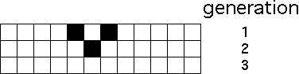
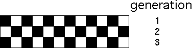
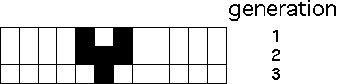

Here are two examples of patterns evolving from this rule. The second example shows that the edges of the universe are handled by wrap-around.
|  |
|  |
Of course, rules can be more complicated. For instance, any of these three nbhds
gives a live cell; all others give a dead cell. Here is an example of a pattern evolving under this rule.
|  |
Return to Background